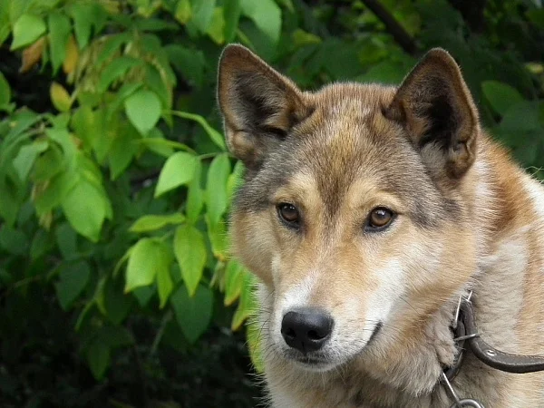

Собаки породы лайка – одни из древнейших четвероногих, выведенные жителями северных регионов Европы, Азии и
Северной
Америки. Их визитные карточки – эффектная внешность, придающая сходство с дикими волками, и звучный голос,
используемый для отвлечения зверя во время охоты. Ниже вы сможете познакомиться с другими особенностями этих
животных,
а также узнать, какие из разновидностей подходят для упряжек и выпаса скота.
Лайки – собаки аборигенного происхождения, почти полностью сохранившие свой первоначальный вид. Несмотря на
некоторые
различия, все они имеют общие черты во внешности и характере.
Восточно-сибирскую лайку иногда путают с хаски, но на самом деле лайка стройнее и изящнее, не склонна
к
доминированию и славится своим послушанием.
Одна из особенностей ВСЛ – растянутое тело. Длина их корпуса должна
превышать рост в холке. Такая особенность повышает общую выносливость и облегчает работу в сугробах.
В центральной части России эта разновидность практически не встречается, так как на данной территории предпочтение
отдается западносибирской породе.
В отличие от западносибирских, обладают меньшей азартностью.
Несмотря на это, подходят для работы практически в
любых климатических условиях, включая тайгу и лесостепи.

Восточно-сибирская
лайка характеризуется как
охотничья
порода с задатками ездовой.
Это самая крупная из лаек, выведенная на основе эвенкийских, амурских и других
промысловых собак Восточной Сибири.
Чистопородный восточник в повседневной жизни – доброжелательное и миролюбивое
создание.
Склонность к немотивированное агрессии для породы не характерна, но только если речь идет о человеке и
соплеменниках.
Мелкая домашняя живность для ВСЛ по-прежнему остается объектом охотничьего вожделения, которую
необходимо если не изловить, то хотя бы слегка погонять.
Кстати, никакого подобострастия от восточно-сибирских лаек
ждать не стоит, воспитать это качество у питомца не получится при всем старании.